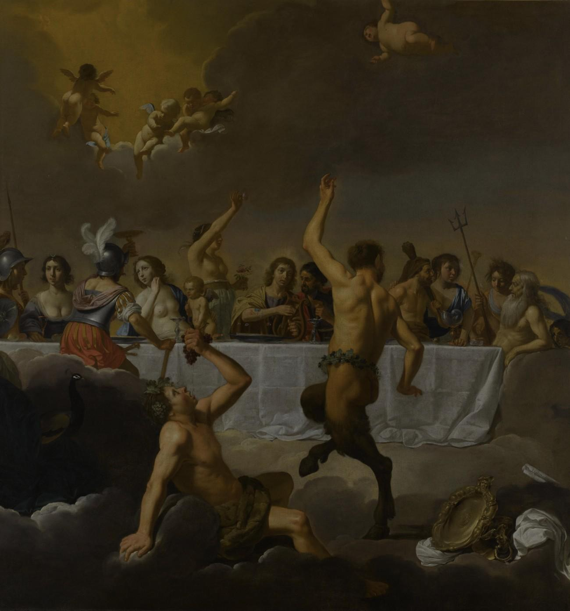
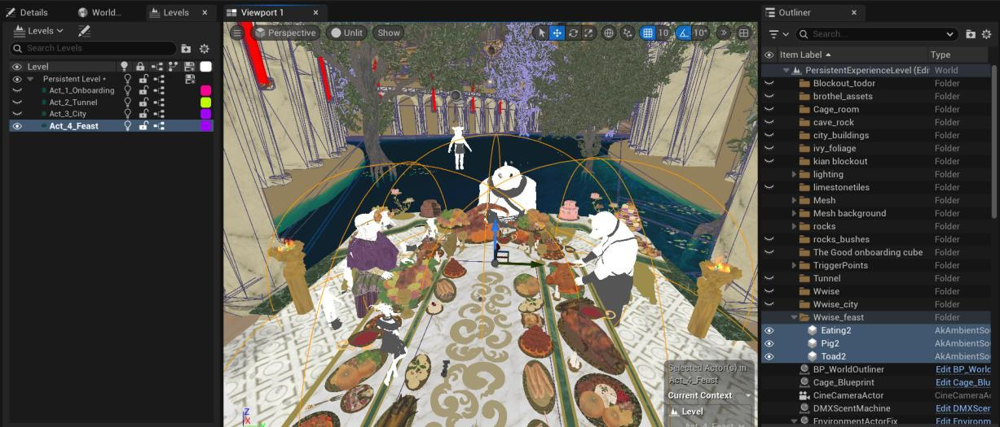
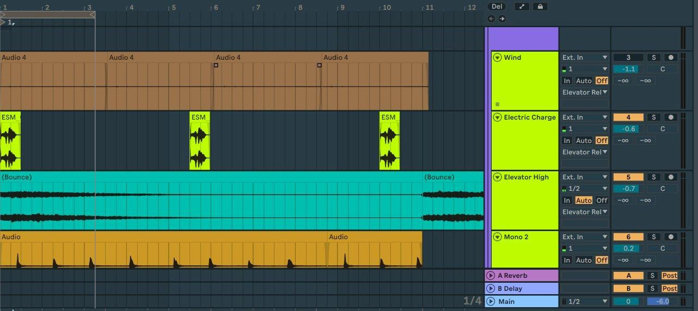
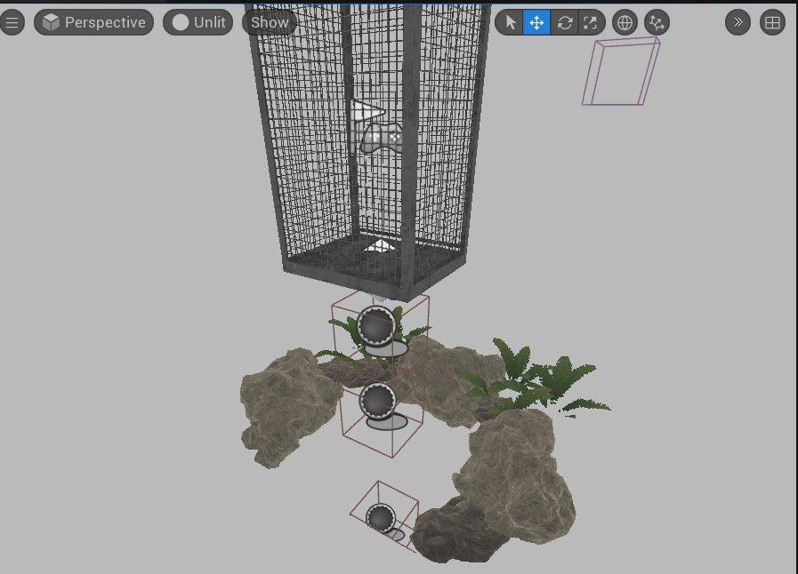
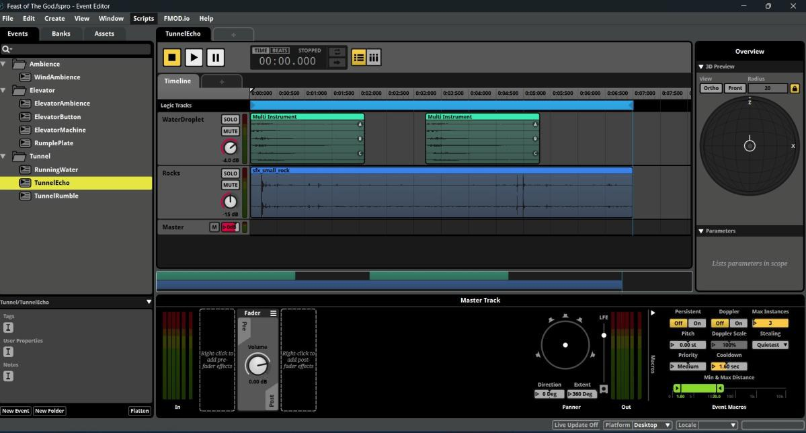
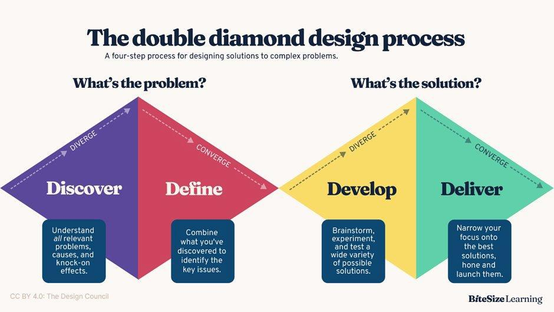

THE BRIEF
The Feast of the Gods is a hyper-reality VR theatre experience developed inside ACuTe, a European innovation project exploring how new technology can modernise theatre and bring in younger audiences. "Hyper-reality" means the physical and virtual worlds are aligned, so the audience can physically interact with what they see in the headset. Participants step into a scene of divine beings at a grand feast.
This was my graduation project, and my contribution was the entire audio side: the sound design and the interactive audio system. The problem was concrete: the piece had no structured sound yet, and without believable, reactive audio a VR world quickly feels static and artificial. My job was to design, build, and evaluate an audio system that carries spatial presence, narrative cues, and physical sensation without ever breaking immersion.
THE EXPERIENCE
The piece is split into five scenes, each needing its own sonic identity: an Elevator, a Tunnel, a Dungeon Room, a City, and the Feast itself. Every scene carries three audio layers: an environmental ambience that stays locked to the world, diegetic events that belong to the story, and interactive triggers that fire on the audience's actions. What set this installation apart from an ordinary VR build was a physical one: a rumble plate beneath the audience, so the sound is felt as well as heard.

APPROACH
I structured the work around the Double Diamond: Discover, Define, Develop, Deliver. The Discover phase was a literature review on VR audio and presence, which gave me a set of principles to build on: HRTF-based binaural rendering for every positioned source, a world-locked ambient layer, distance attenuation, occlusion and reverb tuned per scene, diegetic placement to steer attention, and parameter-driven interactive audio so repeated sounds never give the world away. The Define phase turned the narrative brief and the physical setup into a stakeholder-approved requirements list, tracked in a colour-coded master sheet that doubled as a build tracker right through production.
SOUND DESIGN
All ambience, SFX, and music were authored in Ableton Live, built from recorded sources and synthesis, then implemented through middleware and wired into Unreal. Designing for presence shaped every choice: total silence reads as artificial, so no scene was ever truly quiet; reverb and early reflections were calibrated per space so the elevator shaft and the tunnel each tell the ear how big they are; and repeated sounds like footsteps and electrical buzz used pitch and sample randomisation so the world never sounded like it was looping a clip.

THE TECHNICAL CORE: TWO OUTPUTS FROM ONE TRIGGER
The defining challenge was the dual output. A single sound event needed to send spatialised audio to the Meta Quest headset and low-frequency rumble to a ButtKicker plate under the cage, in sync. I started in Unreal with FMOD, building a data-table-driven audio manager so play requests were looked up and split into 2D and 3D paths without hard-coding gameplay logic.
That foundation worked, but it hit a wall: the Unreal FMOD plugin runs a single Studio System, which blocks per-event routing to a separate hardware device. There was no clean way to peel the rumble off to its own output. After confirming the limit, I migrated the entire project to Wwise (recreating events and routing from scratch) because Wwise supports multiple Audio Devices. A small Blueprint-callable C++ listener class assigns a secondary output device, so plate-bound sounds are heard only by that endpoint. The result: spatial audio stays on the headset while low-frequency rumble routes independently to the plate, and rumble points are placed directly in the level so the haptics can be tuned per scene without touching code.


DOES IT WORK? USER TESTING
I evaluated the system with five participants, most of them new to VR, using a post-experience presence questionnaire adapted from the IGroup Presence Questionnaire plus a short debrief. The headline result spoke to the hyper-reality claim directly: the pairing of sound and physical sensation ("the combination of sound and physical sensation made the experience feel more real") scored highest at 5.6 out of 7. The overall contribution of sound to immersion came in at 5.8, atmosphere at 5.4, and directional/spatial perception at 5.0. The weakest and least consistent item was attention guidance (4.8): sound steering where to look worked strongly for most testers but not all, which fed a final mix pass. With only five participants these numbers are indicative rather than generalisable, but they point the same way: the multisensory coupling is the part that lands.
WHAT I TOOK FROM IT
The biggest lesson was a practical one about committing to tools. The architecture became a hybrid by history, not by design. Wwise only entered the picture after FMOD's single-output limit surfaced mid-project, and the switch cost time an earlier feasibility check would have saved. I came away understanding middleware well enough to evaluate its limitations before committing, and having learned an entire new tool (Wwise) under deadline. The other lesson was about process: client approval of an idea is not the same as a shared vision of the result, and the fastest route to a workable direction was pulling the artist and my fellow designer in early rather than refining my own ideas in isolation.
HOW I MADE IT
The project followed a Double Diamond, four phases that took it from research to a tested build:
- Discover: a literature review on VR audio and presence, which produced a shortlist of techniques worth prototyping, including HRTF binaural rendering, world-locked ambience, distance attenuation, occlusion, and diegetic placement.
- Define: turned the narrative brief and the physical setup into a stakeholder-approved requirements list, tracked in a colour-coded master sheet that doubled as a build tracker.
- Develop: built the audio in iterations, starting with a data-table-driven audio manager in Unreal with FMOD, then the rumble-plate integration.
- Hit FMOD's limit: its single Studio System blocked per-event routing to a separate hardware device, so I migrated the whole project to Wwise and rebuilt the events and routing.
- Solved the dual output: a Blueprint-callable C++ listener assigns a secondary Wwise device, so spatial audio goes to the headset and low-frequency rumble routes to the plate, with rumble points placed per scene in Unreal.
- Deliver: user-tested with five participants using a presence questionnaire, then did a final mix pass based on the results.

DOCUMENTS
Two documents from the project, embedded below: my sound asset list, and a plain-language guide I wrote comparing FMOD and Wwise, the decision that shaped this whole build. Use the toolbar inside each viewer to page and zoom, or open either one full screen.